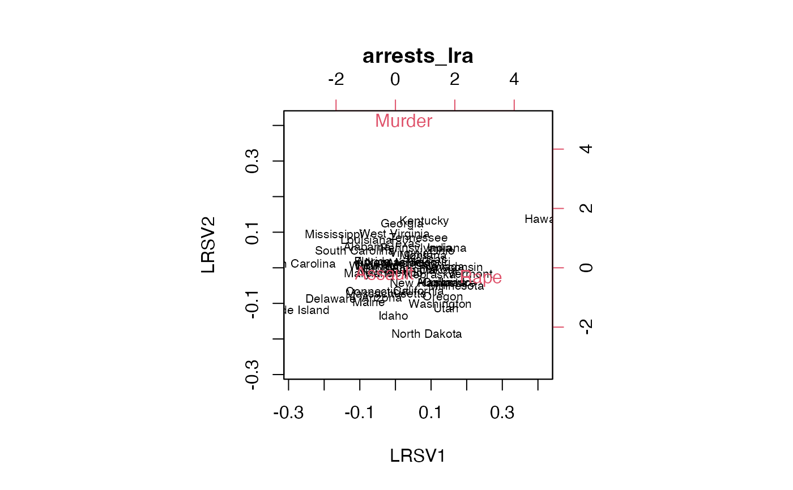
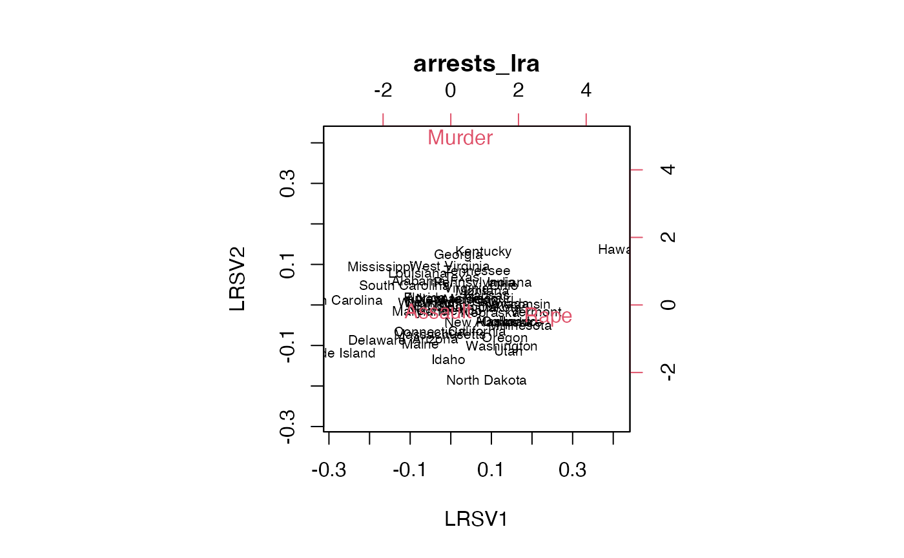

Represent log-ratios between variables based on their values on a population of cases.
lra(x, compositional = FALSE, weighted = TRUE)
# S3 method for class 'lra'
print(x, nd = length(x$sv), n = 6L, ...)
# S3 method for class 'lra'
screeplot(x, main = deparse1(substitute(x)), ...)
# S3 method for class 'lra'
biplot(
x,
choices = c(1L, 2L),
scale = c(0, 0),
main = deparse1(substitute(x)),
var.axes = FALSE,
...
)
# S3 method for class 'lra'
plot(x, main = deparse1(substitute(x)), ...)Arguments
- x
A numeric matrix or rectangular data set.
- compositional
Logical; whether to normalize rows of
xto sum to 1.- weighted
Logical; whether to weight rows and columns by their sums.
- nd
Integer; number of shared dimensions to include in print.
- n
Integer; number of rows of each factor to print.
- main, var.axes, ...
Parameters passed to other plotting methods (in the case of
main, after beingforce()d.- choices
Integer; length-2 vector specifying the components to plot.
- scale
Numeric; values between 0 and 1 that control how inertia is conferred unto the points: Row (
i = 1L) and column (i = 2L) coordinates are scaled bysv ^ scale[[i]]. If a single valuescaleis passed, it is assigned to the rows while1 - scaleis assigned to the columns.
Value
Given an \(n * p\) data matrix and setting \(r=min(n,p)\),
lra() returns a list of class "lra" containing three elements:
svThe \(r-1\) singular values
row.coordsThe \(n * (r-1)\) matrix of row standard coordinates.
column.coordsThe \(p * (r-1)\) matrix of column standard coordinates.
row.weightsThe weights used to scale the row coordinates.
column.weightsThe weights used to scale the column coordinates.
Details
Log-ratio analysis (LRA) is based on a double-centering of log-transformed data, usually weighted by row and column totals. The technique is suitable for positive-valued variables on a common scale (e.g. percentages). The distances between variables' coordinates (in the full-dimensional space) are their pairwise log-ratios. The distances between cases' coordinates are called their log-ratio distances, and the total variance is the weighted sum of their squares.
LRA is not implemented in standard R distributions but is a useful member of the ordination toolkit. This is a minimal implementation following Greenacre's (2010) exposition in Chapter 7.
References
Greenacre MJ (2010) Biplots in Practice. Fundacion BBVA, ISBN: 978-84-923846. https://www.fbbva.es/microsite/multivariate-statistics/biplots.html
Examples
# U.S. 1973 violent crime arrests
head(USArrests)
#> Murder Assault UrbanPop Rape
#> Alabama 13.2 236 58 21.2
#> Alaska 10.0 263 48 44.5
#> Arizona 8.1 294 80 31.0
#> Arkansas 8.8 190 50 19.5
#> California 9.0 276 91 40.6
#> Colorado 7.9 204 78 38.7
# row and column subsets
state_examples <- c("Hawaii", "Mississippi", "North Dakota")
arrests <- c(1L, 2L, 4L)
# pairwise log-ratios of violent crime arrests for two states
arrest_pairs <- combn(arrests, 2L)
arrest_ratios <-
USArrests[, arrest_pairs[1L, ]] / USArrests[, arrest_pairs[2L, ]]
colnames(arrest_ratios) <- paste(
colnames(USArrests)[arrest_pairs[1L, ]], "/",
colnames(USArrests)[arrest_pairs[2L, ]], sep = ""
)
arrest_logratios <- log(arrest_ratios)
arrest_logratios[state_examples, ]
#> Murder/Assault Murder/Rape Assault/Rape
#> Hawaii -2.160935 -1.33797578 0.8229588
#> Mississippi -2.778009 -0.06025919 2.7177496
#> North Dakota -4.029806 -2.21101790 1.8187881
# non-compositional log-ratio analysis
(arrests_lra <- lra(USArrests[, arrests]))
#> Singular values: 0.11758785 0.06383505
#>
#> Row scores (6 of 50):
#> LRSV1 LRSV2
#> Alabama -0.6800120 0.9296011
#> Alaska 0.9299899 -0.6245772
#> Arizona -0.3298496 -1.3115817
#> Arkansas -0.3513443 0.2773231
#> California 0.5516590 -1.0042801
#> Colorado 1.2291066 -0.6388469
#>
#> Column scores:
#> LRSV1 LRSV2
#> Murder 0.283086 4.9570302
#> Assault -0.370595 -0.1805698
#> Rape 2.876702 -0.3660163
screeplot(arrests_lra)
 biplot(arrests_lra, scale = c(1, 0))

# compositional log-ratio analysis
(arrests_lra <- lra(USArrests[, arrests], compositional = TRUE))
#> Singular values: 0.12786989 0.07009419
#>
#> Row scores (6 of 50):
#> LRSV1 LRSV2
#> Alabama -0.8599661 1.0266703
#> Alaska 0.6256391 -0.5908842
#> Arizona -0.5965504 -1.0524702
#> Arkansas -0.5672002 0.3924046
#> California 0.2531761 -0.8868744
#> Colorado 0.9102533 -0.6422862
#>
#> Column scores:
#> LRSV1 LRSV2
#> Murder 0.6072392 4.9382810
#> Assault -0.3999883 -0.1533148
#> Rape 2.7051937 -0.5351457
biplot(arrests_lra, scale = c(1, 0))
biplot(arrests_lra, scale = c(1, 0))

# compositional log-ratio analysis
(arrests_lra <- lra(USArrests[, arrests], compositional = TRUE))
#> Singular values: 0.12786989 0.07009419
#>
#> Row scores (6 of 50):
#> LRSV1 LRSV2
#> Alabama -0.8599661 1.0266703
#> Alaska 0.6256391 -0.5908842
#> Arizona -0.5965504 -1.0524702
#> Arkansas -0.5672002 0.3924046
#> California 0.2531761 -0.8868744
#> Colorado 0.9102533 -0.6422862
#>
#> Column scores:
#> LRSV1 LRSV2
#> Murder 0.6072392 4.9382810
#> Assault -0.3999883 -0.1533148
#> Rape 2.7051937 -0.5351457
biplot(arrests_lra, scale = c(1, 0))